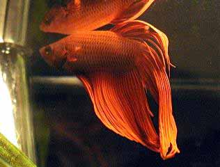
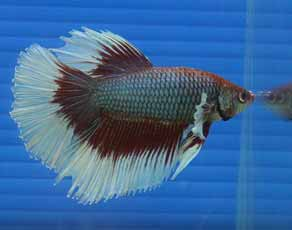

Bettas
HOW TO CARE FOR BETTA FISH
Betta splendens or more commonly known as “bettas” and “Siamese
fighting fish” are a popular aquarium fish known for their
bright colours, personality and low maintenance cost.
They will live up to 4 years providing you care for its
needs. The following below will explain how to care for
your betta and answer any questions that you may be
unsure upon.

Choosing the home

- Betta’s originate from rice paddies in Thailand.
They are used to shallow but wide environments.
Although they will survive in the smallest of tanks,
to give it the best life I would recommend the largest
tank possible.
- Anything larger than 5 gallons will suit fine,
but naturally the more water the better.
If you are planning on keeping your betta with other
fish, you will need at least 10 gallons due to their
aggressive nature.

Decorate the tank
- The betta will love you for it!. Put in a few silk plants,
and add some gravel for aesthetics. Planting live plants
will make the tank look natural and provide a playground
for your betta. You will need a small heater to maintain
a constant water temperature. Add on a small filter to
clean the aquarium and prevent the build up of toxins.

Before adding you betta use a dechlorinator
- Due to the small size of the bowl it is easy for the
build up of chlorine and chloramines in the water.

Adding water
- When you add water only fill the tank up to about 80% max,
to allow room for the betta just incase it decides to leap
out.
- If you are void of a lid, a common fix is to cover the
opening with mesh. Betta’s can jump up to 3 inches when they
feel inclined!

Cycle
- You will need to cycle your tank and build up bacteria
before adding your fish.
Purchasing Your Betta
Look for the best
- Make sure you scout around all the pet stores before you
buy your betta, remember you may have this one fish for up
to 4 years! Choose one you really like the look of and make
sure it has a good personality.
Use these purchasing tips
- Choose a brightly coloured Betta -
some betta’s that are unhealthy or unhappy will have faded colours
as a pose to full strength. Try to avoid these.
- Health -
Make sure that the betta is in good health, check the
condition of its fins, make sure they aren’t torn or
damaged. Check to see that its stomach is not bloated,
there are no unusual bumps or growths.
If there is anything different or strange, i would look
for a different Betta
- Personality -
Be sure to check your Betta is receptive.
Try to Betta’s that tend to sulk at the bottom of the
container. Try to get its attention without tapping
on the glass, see if it responds to your interaction.
Sometimes Betta’s will lighten up when placed into their
new tank but can be docile in the store.
- Connection -
Make sure you have a connection with the fish you buy.
It’s the same as buying a dog or cat,
choose one you like.
Adding the Fish
- Make sure you acclimatize the fish properly by following this article
- Allow the bag to float in the water for around 15 minutes to acclimatize the
correct temperature. It may be different in your house to the
store and the fish needs to be eased into it's new environment.
- Add one cup of water from the bowl into the floating bag
every 5 minutes for the next 10-15 minutes.
- Finally release your betta/siamese fighting fish into the
bowl. Ideally using a net will ensure none of the potentially
contaminated water from the store is released into your bowl.
Feeding your Betta

- Be sure to feed your betta a varied diet but still provide it
with large amounts of protein.
- Betta’s are carnivorous but for best health and colour,
feed them both a varied diet of meat and flakes.
- Frozen or freeze dried shrimp/worms will work great and
they will love you for it.
- Combine these with flakes for a vitamin and vegetable
outlet. You will want to feed this diet about 2 or 3 times a
day max.
- Try not to overfeed your betta as it will only further
contaminate the water, you must realise the size of the
Betta’s stomach is only the size of its eye.
- Live foods are great and fun to watch, but can introduce
parasites, be sure to keep these only for special
occasions.
Cleaning the Tank
- The tank will slowly build up with debris and faeces which
will contaminate the Betta’s environment.
Cleaning will be made easier by the use of a filter,
but this will not completely solve the problem
- Water changes
Once a week or so you will need to change about 30% of the
water in the tank, you should be changing no more than 50%
of the water at a time, any more will lead to
cloudiness and an unhealthy change in water conditions.
- Siphon the gravel
With the use of a simply siphon you can clear up much of
the debris that has fallen onto and in the gravel.
If you have a filter, take out the wool and wash this
under the tap and then replace it.
- Don’t take your betta out of the tank during
maintenance, it may be a little scared the first time
but will soon be accustomed to the change.
Even More Useful Notes
- Be sure not to add more than one male Betta to a single
tank, they are called Siamese fighting fish for a reason.
They will fight till the other is dead.
- Make sure you do not add a female unless you know that you
are going to breed them, in a small tank there will be
serious territorial encounters.
- Betta’s will soon recognize you and enjoy your presence,
be sure to give it some attention once in a while.
- Make sure you use a heater in their tank in colder
weather. If the temperature drops too low they become highly
susceptible to disease.
- DO NOT place your betta in a small bowl or vase,
its very cruel. It will enjoy a larger aquarium,
providing more space for it to swim around.
- If you stock only female betta’s be sure to have more
than 2 and add them to the tank at the same time.
If you add one later, the others will have already
developed their territories. You will have to rearrange
the tank to correct this.
- Make sure that you use tap water and not distilled water.
Distilled water does not have the provided minerals and pH
of tap water.